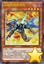

以下是可以在118.178.111.167 23333端口使用的先行卡的列表。下载补丁后即可使用。
使用方法：原版游戏下载补丁后解压至游戏文件夹，YGOMobile请自定义数据库（方法请查看压缩包内使用说明），暂不保证对其他版本的支持。
资料来源：任天堂世界论坛。
脚本作者：ygopro-pre-script，YGOPRO。目前所有脚本来自于以上这2个项目，在此对各自的贡献者表示感谢。
版权声明：转载请注明出自本页面，并完整保留附带的使用说明文档。如果您想对本项目进行修改，请移步这里，但我们建议您直接参与官方项目ygopro-pre-script。
星星和加号图标是Yusuke Kamiyamane的作品。
更新记录
- 2017-05-23 20:59
- 修复：强行修复装弹枪管龙转移控制权后仍然会继续进行伤害计算的问题。
- 2017-05-23 20:26
- 修复：白棘魟特殊召唤报错的问题。
- 修复：临时使娱乐伙伴 异色眼同调士可以从灵摆区域特殊召唤任意怪兽，但特殊召唤后不能进行同调召唤的场合两只怪兽都会被除外。
- 2017-05-23 16:12
- 修复：装弹枪管龙③效果不能发动的问题。
- 2017-05-23 15:04
- 修复：双三角龙连接素材错误的问题。
- 修复：玄化因子不用解放召唤的怪兽不会被除外的问题。
- 2017-05-23 14:42
- 修复：虚空俏丽魔术师部分情况下不能连接召唤的问题。
- 修复：娱乐伙伴 异色眼融解者怪兽效果不能融合召唤的问题。
- 2017-05-23 14:05
- 修复：超级交通机人-移动基地未被标记为「交通机人」卡的问题。
- 修复：爆竹抽卡只抽1张的问题。
- 2017-05-23 13:54
- 修复：麻醉弹丸龙①效果无法发动的问题。
- 修复：水精鳞-深渊海仙女①效果无法发动的问题。
- 修复：装弹枪管龙的处理。
- 修复：虚空俏丽魔术师②效果无效的问题。
- 修复：霸王紫龙 异色眼猛毒龙①效果无法发动的问题。
- 修复：电子界工具未被标记为「零件」（原齿轮）系列的问题。
- 2017-05-23 01:56
- 修复：超重武者 御助-K在怪兽直接攻击时报错的问题。
- 修复：虚空俏丽魔术师②效果无法发动的问题。
- 2017-05-23 01:27
- 修复：「电子暗黑」魔法卡不被识别的问题。
- 2017-05-23 00:50
- 修复：时械巫女不识别部分「时械神」卡的问题。
- 2017-05-23 00:40
- 新卡：近期发售和公布新卡49张。
- 更新：部分卡片更换为正式密码。
- 修复：部分BUG。
- 2017-05-02 21:00
- 修复：DDD 超死伟王 白地狱终末神效果报错的问题。
- 修复：DDD 超死伟王 紫地狱终末神对方怪兽直接攻击时报错的问题。
- 2017-05-01 23:36
- 修复：潜海奇袭保护里侧表示魔法·陷阱卡的问题。
- 2017-05-01 22:42
- 修复：娱乐伙伴 五虹之魔术师可以从手牌灵摆召唤的问题。
- 修复：DDD 超死伟王 白地狱终末神在怪兽特殊召唤时不触发效果的问题。
- 修复：亚马逊斥候把卡回到卡组后不洗牌的问题。
- 修复：亚马逊王女③效果不能被神之警告对应的问题。
- 修复：DDD 超死伟王 紫地狱终末神在自己怪兽被攻击时不能发动灵摆效果的问题。
- 修复：黄昏之双龙无法发动的问题。
- 2017-05-01 12:41
- 修复：临时修复地底恐魔 最终决战没有提示文本的问题。
- 2017-05-01 12:33
- 修复：地底恐魔新卡未被标记为「地底恐魔 巨魔」卡的问题。
- 2017-05-01 01:23
- 新卡：近期公布新卡6张。
- 更新：部分卡片更换为正式密码。
- 更新：优化全部卡图。
- 更新：更换打包方式。
- 2017-04-28 18:38
- 修复：点阵跳离士①②效果可以在同一回合发动的问题。
- 修复：真红眼幼龙效果不能守备表示特殊召唤的问题。
- 2017-04-28 17:01
- 修复：DDD 超死伟王 黑地狱终末神破坏效果没有次数限制的问题。
- 修复：霸王白龙 异色眼辉翼龙攻击力上升效果无效的问题。
- 修复：双汇编亚龙能除外自己发动效果的问题。
- 修复：附锁链的真红眼牙多次攻击的处理。
- 修复：潜海奇袭①效果在对方回合把场地从手卡发动的问题，和破坏效果无效的问题。
- 修复：秘旋谍的潜伏者正规出场后能用其他卡的效果特殊召唤的问题。
- 修复：秘旋谍任务 - 救援回收效果处理时这张卡被破坏仍有效的问题。
- 修复：星遗物-『星杯』检索效果不能被灰流丽对应的问题。
- 修复：星杯神乐 夏娃不能成为自己的效果对象的问题。
- 2017-04-22 19:46
- 修复：No.41 泥睡魔兽 睡梦貘没有苏生限制的问题。
- 修复：城塞鲸必须自己场上有空格子才能特殊召唤的问题。
- 修复：海龙神之怒判断区域错误的问题。
- 修复：潜海奇袭破坏效果无效的问题。
- 2017-04-22 19:05
- 修复：亚马逊的急袭特殊召唤怪兽不上升攻击力的问题。
- 修复：潜海奇袭除外效果可以多次发动的问题。
- 2017-04-22 18:32
- 修复：ROM云雌羊可以回收和特殊召唤同名卡的问题。
- 修复：真红眼幼龙检索效果不能被灰流丽对应的问题。
- 修复：附锁链的真红眼牙装备的怪兽可以额外直接攻击的问题。
- 2017-04-22 18:06
- 修复：真红眼黑刃龙③效果能从对方墓地把怪兽特殊召唤的问题。
- 修复：潜海奇袭不能把海从手卡发动的问题。
- 2017-04-22 13:53
- 修复：已经发动的亚马逊的急袭不能在战斗阶段开始时发动①效果的问题。
- 2017-04-22 13:20
- 修复：亚马逊斥候可以回收任意卡的问题。
- 修复：究极进化药可以除外非怪兽卡的问题。
- 2017-04-22 11:30
- 修复：DDD 超死伟王 紫地狱终末神怪兽①效果无效的问题。
- 修复：亚马逊王女③效果能把自己送去墓地发动和能特殊召唤同名卡的问题。
- 修复：潜海奇袭临时除外的卡不会回场的问题。
- 2017-04-22 11:14
- 修复：ROM云雌羊②效果无效的问题。
- 修复：亚马逊的叫声①效果无效的问题。
- 修复：秘旋谍任务 - 救援墓地效果无COST的问题。
- 2017-04-22 11:05
- 修复：未正规召唤的白斗气海豚被破坏也能发动效果的问题。
- 修复：No.68 魔天牢 桑达尔丰报错的问题。
- 修复：No.71 海异鲨未标记No.号码的问题。
- 修复：双汇编亚龙要求目标怪兽可以被取对象才能发动的问题，和除外对象错误的问题。
- 修复：亚马逊的叫声效果对象以外的怪兽也可以攻击的问题。
- 修复：亚马逊的急袭不会把卡除外的问题。
- 2017-04-22 00:48
- 新卡：近期新卡35张。
- 2017-04-17 18:44
- 修复：淘气仙星灯光舞台选择的卡离场过的场合结束阶段也会要求发动的问题。
- 修复：鬼雷弦阱在魔陷区只有1个格子时也能从手卡发动的问题。
- 2017-04-17 01:55
- 修复：雷仙神的特殊召唤被无效并破坏的场合也发动回复效果的问题。
- 2017-04-17 01:48
- 修复：异色眼枪兵龙①效果无法发动的问题。
- 2017-04-17 01:33
- 修复：淘气仙星·曼珠诗华能以里侧表示的怪兽为对象发动效果的问题。
- 2017-04-16 18:09
- 修复：入侵蠕虫未被标记为「异虫」卡的问题。
- 2017-04-16 11:29
- 修复：电子界男巫能以连接怪兽为效果对象的问题。
- 修复：霸王眷龙 异色眼和霸王眷龙 暗叛逆特殊召唤效果无效的问题。
- 修复：拓扑逻辑轰炸龙伤害效果无效的问题。
- 修复：变则齿轮除外对象错误的问题。
- 2017-04-16 01:10
- 新卡：COTD(1001)全部新卡、异色眼枪兵龙、侏罗纪冲击。
- 更新：优化部分卡图。
卡片列表
| 卡图 | 卡名 | 效果 |
|---|---|---|
| 白棘魟 | [怪兽|效果] 鱼/水 [★4] 1400/1000 这个卡名的作为①的方法的特殊召唤1回合只能有1次，作为②的效果1回合只能使用1次。 ①：这张卡可以把手卡1只水属性怪兽丢弃，从手卡特殊召唤。 ②：这张卡从墓地的特殊召唤成功的场合才能发动。这个回合，这张卡当作调整使用。 | |
| DDD 超视王 零·麦克斯韦 | [怪兽|效果|灵摆] 恶魔/暗 [★7] 2800/2500 4/4 ←4 【灵摆】 4→ 这个卡名的灵摆效果1回合只能使用1次。 ①：以场上1只表侧表示怪兽为对象才能发动。那只怪兽的守备力直到回合结束时变成0。 【怪兽效果】 ①：这张卡向对方的守备表示怪兽攻击的伤害计算前才能发动。那只对方怪兽的守备力直到伤害步骤结束时变成0。 ②：这张卡向守备表示怪兽攻击的场合，给与攻击力超过那个守备力的数值的战斗伤害。 ③：这张卡的战斗发生的对自己的战斗伤害变成0。 | |
 | 数字机灵 | [怪兽|通常] 电子界/地 [★2] 1500/0 电子空间发现的亚种。它的信息量好像稍微多点。 |
 | 克莱因客户端蚁 | [怪兽|效果] 电子界/光 [★3] 1500/1500 ①：只要通常召唤的这张卡在怪兽区域存在，自己场上的电子界族怪兽的攻击力·守备力在自己回合内上升500。 ②：场上的这张卡被战斗·效果破坏的场合，可以作为代替把自己的手卡·场上1只电子界族怪兽破坏。 |
 | 反向连接兽 | [怪兽|效果] 电子界/暗 [★3] 1600/0 ①：额外怪兽区域只有对方怪兽存在的场合，这张卡可以从手卡特殊召唤。 ②：把这张卡解放才能发动。额外怪兽区域的怪兽全部回到持有者卡组。这个效果的发动后，直到回合结束时自己不能从额外卡组把怪兽特殊召唤。 |
 | 均衡负载王 | [怪兽|效果] 电子界/光 [★4] 1700/1200 这个卡名的②的效果1回合只能使用1次。 ①：1回合1次，支付1000基本分才能发动。这个回合自己在通常召唤外加上只有1次，自己主要阶段可以把1只电子界族怪兽召唤。 ②：这张卡被除外的场合才能发动。从手卡把1只4星以下的怪兽特殊召唤。 |
 | ROM云雌羊 | [怪兽|效果] 电子界/暗 [★4] 1800/0 ①：这张卡召唤成功时，以「ROM云雌羊」以外的自己墓地1只电子界族怪兽为对象才能发动。那只怪兽加入手卡。 ②：这张卡被战斗·效果破坏的场合才能发动。从卡组把「ROM云雌羊」以外的1只4星以下的电子界族怪兽特殊召唤。 |
 | 点阵图跳离士 | [怪兽|效果] 电子界/地 [★1] 0/2100 这个卡名的①②的效果1回合只能有1次使用其中任意1个，决斗中各能使用1次。 ①：这张卡被送去墓地的场合才能发动。这张卡特殊召唤。 ②：这张卡被除外的场合才能发动。这张卡特殊召唤。 |
 | 双汇编亚龙 | [怪兽|效果] 电子界/暗 [★8] 2800/1000 这个卡名的①的效果1回合只能使用1次。 ①：这张卡在手卡·墓地存在的场合，从手卡以及自己场上的表侧表示怪兽之中把2只电子界族怪兽除外才能发动。这张卡特殊召唤。这个效果特殊召唤的这张卡的攻击力变成一半。 ②：1回合1次，把1张手卡除外才能发动。选持有这张卡的攻击力以下的攻击力的场上1只怪兽除外。 |
 | 电脑网后门 | [魔法|速攻] 这个卡名的卡在1回合只能发动1张。 ①：以自己场上1只电子界族怪兽为对象才能发动。那只怪兽除外，把持有比那只怪兽的原本攻击力低的攻击力的1只电子界族怪兽从卡组加入手卡。这个效果除外的怪兽在下次的自己准备阶段回到场上，那个回合可以直接攻击。 |
 | 编码语者 | [怪兽|效果|连接] 电子界/光 [LINK-3] 2300/- [↑][↓][↘] 电子界族怪兽2只以上 ①：1回合1次，这张卡所连接区的自己怪兽和比那只怪兽攻击力高的对方怪兽进行战斗的伤害计算前才能发动。那只自己怪兽不会被那次战斗破坏，那次战斗发生的对自己的战斗伤害变成0。那次伤害计算后，选这张卡或者这张卡所连接区1只自己怪兽，那个攻击力直到回合结束时上升那只进行战斗的对方怪兽的攻击力数值。 |
 | 三栅极男巫 | [怪兽|效果|连接] 电子界/地 [LINK-3] 2200/- [↑][←][→] 衍生物以外的怪兽2只以上 ①：得到和这张卡互相连接的怪兽数量的以下效果。 ●1只以上：和这张卡互相连接的怪兽在和对方怪兽进行战斗的场合，那只怪兽给与对方的战斗伤害变成2倍。 ●2只以上：1回合1次，以场上1张卡为对象才能发动。那张卡除外。 ●3只：1回合1次，魔法·陷阱·怪兽的效果发动时才能发动。那个发动无效并除外。 |
 | 二进制女巫 | [怪兽|效果|连接] 电子界/地 [LINK-2] 1600/- [←][→] 衍生物以外的怪兽2只 ①：得到和这张卡互相连接的怪兽数量的以下效果。 ●1只以上：和这张卡互相连接的怪兽用和对方怪兽的战斗给与对方战斗伤害时才能发动。自己基本分回复那个数值。 ●2只：1回合1次，以自己场上2只表侧表示怪兽为对象才能发动。直到回合结束时，那2只怪兽之内1只的攻击力变成一半，另1只的攻击力上升那个数值。这个效果在对方回合也能发动。 |
 | 引导交错鹿 | [怪兽|效果] 电子界/光 [★5] 2300/500 这个卡名的①的效果1回合只能使用1次。 ①：自己场上有电子界族怪兽召唤时才能发动。这张卡从手卡特殊召唤。 ②：这张卡给与对方战斗伤害时才能发动。在自己场上把1只「引导鹿衍生物」（电子界族·地·1星·攻/守0）特殊召唤。 |
 | 真红眼幼龙 | [怪兽|效果] 龙/暗 [★3] 1200/700 ①：这张卡被战斗破坏送去墓地时才能发动。从卡组把1只7星以下的「真红眼」怪兽特殊召唤，墓地的这张卡当作攻击力上升300的装备卡使用给那只怪兽装备。 ②：给怪兽装备的这张卡被送去墓地的场合才能发动。从自己的卡组·墓地选1只龙族·1星怪兽加入手卡。 |
 | 真红眼铁骑士-基亚·弗里德 | [怪兽|效果] 战士/暗 [★4] 1800/1600 ①：1回合1次，这张卡有装备卡被装备的场合才能发动。那些装备卡破坏。那之后，可以选对方场上1张魔法·陷阱卡破坏。 ②：1回合1次，把这张卡装备的自己场上1张装备卡送去墓地，以自己墓地1只7星以下的「真红眼」怪兽为对象才能发动。那只怪兽特殊召唤。 |
 | 真红眼黑刃龙 | [怪兽|效果|融合] 龙/暗 [★7] 2800/2400 「真红眼黑龙」＋战士族怪兽 ①：「真红眼」怪兽的攻击宣言时以自己墓地1只战士族怪兽为对象才能发动。那只怪兽当作攻击力上升200的装备卡使用给这张卡装备。 ②：自己场上的卡为对象的卡的效果发动时，把自己场上1张装备卡送去墓地才能发动。那个发动无效并破坏。 ③：这张卡被战斗·效果破坏的场合才能发动。给这张卡装备的怪兽从自己墓地尽可能特殊召唤。 |
 | 附锁链的真红眼牙 | [陷阱] ①：以自己场上1只「真红眼」怪兽为对象才能把这张卡发动。这张卡当作装备卡使用给那只怪兽装备。装备怪兽在同1次的战斗阶段中最多2次可以向怪兽攻击。 ②：把装备的这张卡送去墓地，以场上1只效果怪兽为对象才能发动。那只效果怪兽当作装备卡使用给这张卡装备过的怪兽装备。只要这个效果把怪兽装备中，装备怪兽变成和那只怪兽相同的攻击力·守备力。 |
 | 亚马逊王女 | [怪兽|效果] 战士/地 [★3] 1200/900 这个卡名的②的效果1回合只能使用1次。 ①：这张卡的卡名只要在场上·墓地存在当作「亚马逊女王」使用。 ②：这张卡召唤·特殊召唤成功的场合才能发动。从卡组把1张「亚马逊」魔法·陷阱卡加入手卡。 ③：这张卡的攻击宣言时把这张卡以外的自己的手卡·场上1张卡送去墓地才能发动。从卡组把「亚马逊王女」以外的1只「亚马逊」怪兽守备表示特殊召唤。 |
 | 亚马逊宠物仔虎 | [怪兽|效果] 兽/地 [★2] 500/500 这个卡名的②的效果1回合只能使用1次。 ①：这张卡的卡名只要在场上·墓地存在当作「亚马逊宠物虎」使用。 ②：这张卡在手卡·墓地存在，自己场上有「亚马逊」怪兽召唤·特殊召唤的场合才能发动。这张卡特殊召唤。 ③：这张卡的攻击力上升自己墓地的「亚马逊」卡数量×100。 |
 | 亚马逊的叫声 | [魔法|速攻] 这个卡名的卡在1回合只能发动1张。 ①：从卡组把「亚马逊的叫声」以外的1张「亚马逊」卡加入手卡或送去墓地。 ②：自己主要阶段把墓地的这张卡除外，以自己场上1只「亚马逊」怪兽为对象才能发动。这个回合，那只怪兽以外的自己怪兽不能攻击，作为对象的怪兽可以向对方怪兽全部各作1次攻击。 |
 | 亚马逊的急袭 | [陷阱|永续] ①：1回合1次，自己·对方的战斗阶段才能发动。从手卡把1只「亚马逊」怪兽特殊召唤。这个效果特殊召唤的怪兽的攻击力直到回合结束时上升500。 ②：自己的「亚马逊」怪兽和对方怪兽进行战斗的伤害计算后才能发动。那只对方怪兽除外。 ③：场上的这张卡被破坏送去墓地的场合，以自己墓地1只「亚马逊」怪兽为对象才能发动。那只怪兽特殊召唤。 |
 | 传说的渔人二世 | [怪兽|效果] 战士/水 [★5] 2200/1800 ①：这张卡的卡名只要在场上·墓地存在当作「传说的渔人」使用。 ②：只要这张卡在怪兽区域存在并在场上有「海」存在，这张卡不受其他怪兽的效果影响。 ③：表侧表示的这张卡因对方的效果从场上离开的场合或者被战斗破坏的场合才能发动。从卡组把1只水属性·7星怪兽加入手卡。 |
 | 城塞鲸 | [怪兽|效果] 鱼/水 [★7] 2350/2150 这个卡名的①的效果1回合只能使用1次。 ①：这张卡在手卡·墓地存在的场合，把自己场上2只水属性怪兽解放才能发动。这张卡特殊召唤。 ②：这张卡特殊召唤成功的场合才能发动。从卡组选1张「潜海奇袭」在自己场上盖放。 ③：1回合1次，只以自己场上的水属性怪兽1只为对象的对方的魔法·陷阱·怪兽的效果发动时才能发动。那个发动无效并破坏。 |
 | 海龙神之怒 | [魔法|速攻] 这个卡名的卡在1回合只能发动1张。 ①：场上有「海」存在的场合，以最多有自己场上的原本等级是5星以上的水属性怪兽数量的对方场上的怪兽为对象才能发动。那些怪兽破坏。直到下个回合的结束时，那些怪兽区域不能使用。 |
 | 潜海奇袭 | [陷阱|永续] ①：作为这张卡的发动时的效果处理，可以选自己的手卡·墓地1张「海」发动。 ②：场上有「海」存在的场合，表侧表示的这张卡得到以下效果。 ●1回合1次，把自己场上1只水属性怪兽直到结束阶段除外才能发动。这个回合，自己场上的表侧表示的魔法·陷阱卡不会被对方的效果破坏。 ●原本等级是5星以上的自己的水属性怪兽和对方怪兽进行战斗的伤害步骤开始时发动。那只对方怪兽破坏。 |
 | 电子暗黑火炮 | [怪兽|效果] 龙/暗 [★3] 1600/800 这个卡名的①②的效果1回合各能使用1次。 ①：把这张卡从手卡丢弃才能发动。从卡组把1只机械族「电子暗黑」怪兽加入手卡。 ②：把这张卡当作装备卡使用来装备的怪兽进行战斗的伤害计算时才能发动。从卡组把1只怪兽送去墓地。 ③：给怪兽装备的这张卡被送去墓地的场合才能发动。自己从卡组抽1张。 |
 | 电子暗黑恶爪 | [怪兽|效果] 龙/暗 [★3] 1600/800 这个卡名的①②的效果1回合各能使用1次。 ①：把这张卡从手卡丢弃才能发动。从卡组把1张「电子暗黑」魔法·陷阱卡加入手卡。 ②：把这张卡当作装备卡使用来装备的怪兽进行战斗的伤害计算时才能发动。从自己的额外卡组把1只怪兽送去墓地。 ③：给怪兽装备的这张卡被送去墓地的场合，以自己墓地1只「电子暗黑」怪兽为对象才能发动。那只怪兽加入手卡。 |
 | 铠狱龙-电子暗冥龙 | [怪兽|效果|融合] 机械/暗 [★10] 2000/2000 「电子暗黑」效果怪兽×5 这张卡用融合召唤才能从额外卡组特殊召唤。 ①：这张卡特殊召唤成功的场合才能发动。从自己墓地选1只龙族怪兽或者机械族怪兽当作装备卡使用给这张卡装备。 ②：这张卡的攻击力上升这张卡的效果装备的怪兽的原本攻击力数值。 ③：对方把魔法·陷阱·怪兽的效果发动时，把自己场上1张装备卡送去墓地才能发动。那个发动无效并破坏。 |
 | 电子暗黑业火 | [魔法|场地] 这个卡名的②的效果1回合只能使用1次。 ①：有装备卡装备的自己场上的「电子暗黑」效果怪兽不会成为对方的效果的对象，不会被对方的效果破坏。 ②：以自己场上1只「电子暗黑」怪兽为对象才能发动。那只怪兽回到持有者手卡，那之后可以把1只「电子暗黑」怪兽召唤。 ③：场上的这张卡被对方的效果破坏的场合才能发动。从卡组把1张「融合」魔法卡加入手卡。 |
 | 搅拌机人 | [怪兽|效果] 机械/风 [★4] 0/2200 这个卡名的①②的效果1回合各能使用1次。 ①：把自己场上1只机械族怪兽解放才能发动。从卡组把1只风属性以外的「机人」怪兽特殊召唤。 ②：把基本分支付一半，从自己墓地把包含这张卡的机械族怪兽任意数量除外才能发动。和除外的怪兽数量相同等级的1只「机人」融合怪兽从额外卡组无视召唤条件特殊召唤。这个效果特殊召唤的怪兽在结束阶段破坏。 |
 | 超级交通机人-移动基地 | [怪兽|效果|融合] 机械/地 [★10] 0/5000 「机人」融合怪兽＋「机人」怪兽 这个卡名的①的效果1回合只能使用1次。 ①：以对方场上1只表侧表示怪兽为对象才能发动。把持有那只怪兽的攻击力以下的攻击力的1只「机人」怪兽从卡组·额外卡组特殊召唤。 ②：自己·对方的结束阶段以这张卡以外的自己的主要怪兽区域1只「机人」怪兽为对象才能发动。那只自己怪兽回到持有者手卡，这张卡的位置向那个怪兽区域移动。 |
 | 巨机人都市 | [魔法|场地] 这个卡名的①②的效果1回合各能使用1次，这些效果发动的回合，自己不是融合怪兽不能从额外卡组特殊召唤。 ①：以这张卡以外的自己场上1张卡为对象才能发动。那张卡破坏，从卡组把1张「机人」卡加入手卡。 ②：自己的「机人」怪兽进行战斗的伤害计算时，从卡组把1只「机人」怪兽送去墓地才能发动。那只进行战斗的自己怪兽只在那次伤害计算时原本攻击力和原本守备力交换。 |
 | 水龙-团簇 | [怪兽|效果|特殊召唤] 海龙/水 [★10] 2800/2600 这张卡不能通常召唤。「化学结合」魔法·陷阱卡的效果才能特殊召唤。 ①：这张卡特殊召唤成功的场合才能发动。对方场上的效果怪兽直到回合结束时攻击力变成0，不能把效果发动。 ②：把这张卡解放才能发动。从手卡·卡组把2只「水龙」无视召唤条件守备表示特殊召唤。这个效果在对方回合也能发动。 |
 | 氘素龙 | [怪兽|效果] 恐龙/水 [★5] 2000/1400 这个卡名的①②的效果1回合各能使用1次。 ①：自己主要阶段把这张卡从手卡丢弃才能发动。从卡组把1张「化学结合」魔法·陷阱卡加入手卡。 ②：这张卡召唤·特殊召唤成功的场合，以自己墓地的「氢素龙」「氧素龙」「氘素龙」的其中1只为对象才能发动。那只怪兽特殊召唤。 |
 | 化学结合-D2O | [魔法] 这个卡名的②的效果1回合只能使用1次。 ①：把自己的手卡·场上2只「氘素龙」和1只「氧素龙」解放才能发动。从自己的手卡·卡组·墓地选1只「水龙」或者「水龙-团簇」当作「化学结合-H2O」的效果特殊召唤。 ②：这张卡在墓地存在，「水龙」或者「水龙-团簇」从场上送去自己墓地的场合发动。墓地的这张卡回到手卡。 |
 | 化学结合-DHO | [陷阱] ①：从自己的手卡·墓地让「氘素龙」「氢素龙」「氧素龙」各1只回到卡组才能发动。从自己的手卡·墓地选1只「水龙-团簇」特殊召唤。 ②：把墓地的这张卡除外才能发动。从自己的卡组·墓地选1只「水龙」或者「水龙-团簇」加入手卡。 |
| 关口龙 | [怪兽|效果] 龙/暗 [★4] 1600/1400 这个卡名的①的方法的特殊召唤1回合只能有1次。 ①：对方场上有连接怪兽存在的场合，这张卡可以从手卡特殊召唤。 ②：1回合1次，自己主要阶段才能发动。从手卡把1只4星以下的龙族·暗属性怪兽特殊召唤。 | |
 | 嗅探龙 | [怪兽|效果] 龙/暗 [★2] 800/400 这个卡名的效果1回合只能使用1次。 ①：这张卡召唤·特殊召唤成功的场合才能发动。从卡组把1只「嗅探龙」加入手卡。 |
| 麻醉弹丸龙 | [怪兽|效果] 龙/暗 [★1] 0/2200 这个卡名的①②的效果1回合各能使用1次。 ①：场上的这张卡为对象的连接怪兽的效果发动时才能发动。这张卡破坏。那之后，选场上1只表侧表示怪兽，那只怪兽不能攻击，效果无效化。 ②：场上的这张卡被战斗·效果破坏送去墓地的回合的结束阶段才能发动。从卡组把「麻醉弹丸龙」以外的1只「弹丸」怪兽特殊召唤。 | |
 | 自动手枪弹丸龙 | [怪兽|效果] 龙/暗 [★3] 1600/1000 这个卡名的①②的效果1回合各能使用1次。 ①：场上的这张卡为对象的连接怪兽的效果发动时才能发动。这张卡破坏。那之后，选场上1张魔法·陷阱卡送去墓地。 ②：场上的这张卡被战斗·效果破坏送去墓地的回合的结束阶段才能发动。从卡组把「自动手枪弹丸龙」以外的1只「弹丸」怪兽特殊召唤。 |
|  | 马格努姆弹丸龙 | [怪兽|效果] 龙/暗 [★4] 1800/1200 这个卡名的①②的效果1回合各能使用1次。 ①：场上的这张卡为对象的连接怪兽的效果发动时才能发动。这张卡破坏。那之后，选场上1只怪兽送去墓地。 ②：场上的这张卡被战斗·效果破坏送去墓地的回合的结束阶段才能发动。从卡组把「马格努姆弹丸龙」以外的1只「弹丸」怪兽特殊召唤。 |
 | 玄化神龙 末日龙 | [怪兽|效果|调整] 幻龙/光 [★4] 1500/1000 这个卡名的①②的效果1回合各能使用1次。 ①：这张卡召唤·特殊召唤成功的场合才能发动。从自己卡组上面把3张卡除外。这张卡的攻击力上升这个效果除外的「玄化」卡数量×300。 ②：这张卡给与对方战斗伤害时才能发动。从卡组把1只5星以上的「玄化」怪兽特殊召唤。这个效果特殊召唤的怪兽在下个回合的结束阶段除外。 |
| 玄化海龙 泰达路斯 | [怪兽|效果] 幻龙/光 [★7] 2600/1500 ①：这张卡用「玄化」怪兽的效果特殊召唤成功的场合才能发动。这张卡以外的场上的特殊召唤的表侧表示怪兽全部除外。 ②：这张卡被除外的场合，下个回合的准备阶段让除外的这张卡回到卡组才能发动。从卡组把「玄化海龙 泰达路斯」以外的1张「玄化」卡除外。 | |
 | 玄化凤凰神 | [怪兽|效果] 幻龙/光 [★8] 2400/1600 ①：这张卡用「玄化」怪兽的效果特殊召唤成功的场合才能发动。场上盖放的魔法·陷阱卡全部除外。 ②：这张卡被除外的场合，下个回合的准备阶段让除外的这张卡回到卡组才能发动。从卡组把「玄化凤凰神」以外的1张「玄化」卡加入手卡。 |
 | 玄化暴君龙 | [怪兽|效果] 幻龙/光 [★8] 2900/2500 ①：「玄化」怪兽的效果特殊召唤的这张卡不受陷阱卡的效果影响，可以在这张卡向怪兽攻击过的场合只再1次继续攻击。 ②：这张卡被除外的场合，下个回合的准备阶段让除外的这张卡回到卡组才能发动。从手卡把1只「玄化」怪兽特殊召唤。这个效果特殊召唤的怪兽在下个回合的结束阶段除外。 |
| 水精鳞-深渊海仙女 | [怪兽|效果] 水/水 [★3] 1200/2000 这个卡名的①②的效果1回合各能使用1次。 ①：把这张卡从手卡丢弃，以自己场上1只水属性怪兽为对象才能发动。选那只怪兽以外的自己的手卡·场上1只水属性怪兽破坏，作为对象的怪兽的攻击力·守备力直到回合结束时上升这个效果破坏的怪兽的原本数值。这个效果在对方回合也能发动。 ②：这张卡从场上送去墓地的场合才能发动。自己从卡组抽1张，那之后选1张手卡丢弃。 | |
 | 装弹枪管龙 | [怪兽|效果|连接] 龙/暗 [LINK-4] 3000/- [←][→][↙][↘] 效果怪兽3只以上 ①：这张卡不会成为怪兽的效果的对象。 ②：1回合1次，以场上1只表侧表示怪兽为对象才能发动。那只怪兽的攻击力·守备力下降500。对方不能对应这个效果的发动把卡的效果发动。这个效果在对方回合也能发动。 ③：这张卡向对方怪兽攻击的伤害步骤开始时才能发动。那只对方怪兽在这张卡所连接区放置得到控制权。那只怪兽在下个回合的结束阶段送去墓地。 |
| 双三角龙 | [怪兽|效果|连接] 龙/暗 [LINK-2] 1200/- [→][↓] 衍生物以外的4星以下的龙族怪兽2只 ①：这张卡连接召唤成功时，支付500基本分，以自己墓地1只5星以上的怪兽为对象才能发动。那只怪兽在作为这张卡所连接区的自己场上特殊召唤。这个效果特殊召唤的怪兽的效果无效化，这个回合不能攻击。 | |
| 虚空俏丽魔术师 | [怪兽|效果|连接] 魔法师/暗 [LINK-2] 1700/- [↑][↓] 衍生物以外的相同种族的怪兽2只 自己对「虚空俏丽魔术师」1回合只能有1次连接召唤。 ①：这张卡连接召唤成功的场合发动。这张卡所连接区的怪兽全部回到持有者手卡。 ②：1回合1次，宣言1个卡名才能发动。把这张卡所互相连接区的怪兽的连接标记的合计数量的卡从自己卡组上面翻开，那之中有宣言的卡的场合，那卡加入手卡。那以外的翻开的卡全部送去墓地。 | |
| 爆竹抽卡 | [魔法|速攻] 这个卡名的卡在1回合只能发动1张。 ①：以自己场上1只「弹丸」怪兽为对象才能发动。那只怪兽破坏，自己从卡组抽2张。 | |
| 速攻旋转 | [魔法|速攻] ①：从卡组把1只「弹丸」怪兽特殊召唤。这个效果特殊召唤的怪兽不能攻击，结束阶段破坏。 | |
| 玄化因子 | [魔法|场地] ①：只要这张卡在场地区域存在，自己在5星以上的「玄化」怪兽召唤的场合需要的解放可以不用。这个效果1回合只能适用1次。这个效果适用召唤的怪兽在下个回合的结束阶段除外。 ②：只要这张卡在场地区域存在，对方不能对应自己的「玄化」怪兽的效果的发动把魔法·陷阱·怪兽的效果发动。 | |
 | 玄化次元 | [陷阱|永续] 这个卡名的①②的效果1回合各能使用1次。 ①：对方对怪兽的特殊召唤成功的场合，以除外的1只自己的「玄化」怪兽为对象才能把这个效果发动。那只怪兽特殊召唤。这个效果特殊召唤的怪兽在下个回合的结束阶段除外。 ②：这张卡已在魔法与陷阱区域存在的状态，这张卡以外的自己的「玄化」卡被除外的场合，以对方场上1张卡为对象才能发动。那张卡除外。 |
常见问题
Q.某张卡有BUG！
A.请到页面下方留言反馈，或联系233服QQ群里的尸体233（QQ：921439818）。
Q.卡片右下角的黄色星星是什么意思？
A.表示那张卡暂未有实卡，是先行卡。其卡片密码暂时使用临时密码（1开头的9位数）。
这种卡需要在23333端口才能使用。此外部分使用同样密码体系的服务器（不包括Checkmate）也可以使用。
实卡发售后，对应的带星星的先行卡会失效，请更新游戏，来获取正式的版本。
Q.卡片右下角的绿色加号是什么意思？
A.表示那张卡已有实卡但YGOPRO的国内官方版本暂未更新，是本补丁增加的卡片。其卡片密码是正式密码。
这种卡在233端口更新前只能在23333端口使用。但其他更新速度较快的服务器（包括Checkmate）一般也可使用。
一般这种卡不久就会正式更新到233服，请关注公告，更新后请下载YGOPRO的正式更新来获取那些卡。
Q.为什么安装了最新的先行卡补丁仍然没有某些卡？
A.本补丁只包含先行卡，不包含已经正式更新的卡。
请下载YGOPRO的正式更新来获取那些卡。
Q.为什么我更新先行卡补丁之后反而有卡消失了？
A.因为那些卡已经不再是先行卡了，本补丁不再包含它们。
请下载YGOPRO的正式更新来获取那些卡。
Q.安装后没有新卡？
A.本补丁附带新卡列表的卡组。
请确保你把文件解压到了游戏文件夹里，而不是新建了一个文件夹。
电脑版需要重启游戏才能重新载入数据库。
手机版需要自定义数据库，详见使用方法。
Q.安装后新卡没有卡图？
A.请确保你解压出来了压缩包里所有文件，不能只解压1个文件。
Q.手机版找不到sdcard文件夹？
A.部分手机可能位于storage或mnt文件夹里。
Q.手机版提示没有权限？
A.同上，换个文件夹试试。
Q.某张卡不能用，提示无效卡组？
A.本补丁的最新版只能与23333端口完美兼容。
请下载YGOPRO的正式更新，并更新先行卡补丁到最新版，把端口改为23333，才能正常使用先行卡。
Q.搜索卡片时发现有重复卡片？
A.因为本补丁是先行卡补丁，正式更新的卡片可能会与本补丁的卡片重复。删除或更新本补丁即可。
Q.电脑版怎么删除补丁？
A.删除expansions文件夹或其中pre-release.cdb即可。
Q.手机版怎么删除补丁？
A.点自定义卡片数据库下面的重置卡片数据库。
如果你打过其他的补丁，还需要再自定义一次数据库，选择cards.cdb。